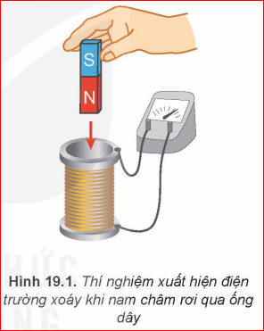
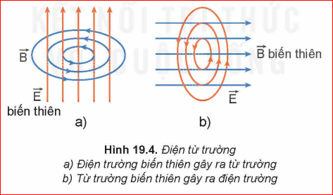
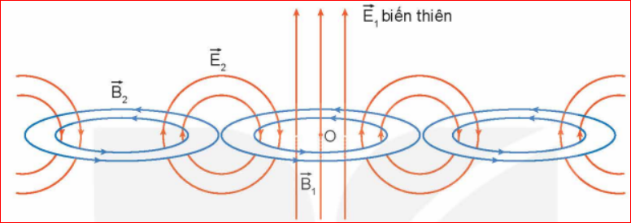

Thí nghiệm: Khi cho nam châm rơi qua ống dây kín, từ thông qua ống dây biến thiên làm xuất hiện dòng điện cảm ứng. Điều này chứng tỏ trong dây dẫn xuất hiện một điện trường có đường sức là các đường cong kín.
Maxwell khẳng định: Điện trường xoáy vẫn xuất hiện ngay cả khi không có ống dây.

Kết luận: Trong vùng không gian có từ trường biến thiên theo thời gian thì trong vùng đó xuất hiện một điện trường xoáy.
Thảo luận: So sánh sự giống nhau và khác nhau giữa điện trường gây ra bởi điện tích đứng yên và điện trường xoáy.
Thí nghiệm với dòng điện xoay chiều qua tụ điện cho thấy giữa hai bản tụ có một điện trường biến thiên (dòng điện dịch). Chính điện trường biến thiên này đã gây ra từ trường xung quanh nó.
Kết luận: Nếu tại một nơi có điện trường biến thiên theo thời gian thì tại nơi đó xuất hiện một từ trường. Đường sức của từ trường bao giờ cũng khép kín.
Điện trường biến thiên và từ trường biến thiên cùng tồn tại trong không gian, có thể chuyển hóa lẫn nhau trong một trường thống nhất gọi là điện từ trường.

[Hình 19.4: Mô hình Điện từ trường]
Câu hỏi: So sánh điểm khác nhau cơ bản giữa điện từ trường với điện trường, từ trường.
Khi một điện trường biến thiên sinh ra một từ trường biến thiên ở vùng lân cận, từ trường này lại sinh ra điện trường biến thiên tiếp theo. Quá trình lan truyền này gọi là sóng điện từ.
\( \vec{E} \) biến thiên \( \rightarrow \) \( \vec{B} \) biến thiên \( \rightarrow \) \( \vec{E} \) biến thiên \( \dots \)

[Hình 19.5: Lan truyền sóng điện từ]
Công thức bước sóng trong chân không:
\( \lambda = c \cdot T = \frac{c}{f} \)
Trong đó \( c \approx 3 \cdot 10^8 \) m/s (tốc độ ánh sáng)
1. Nêu mô hình sóng điện từ.
2. Dựa vào mô hình, chứng tỏ sóng điện từ là sóng ngang.
3. Sóng điện từ khác sóng cơ ở điểm nào?
Câu 1: Phát biểu nào sau đây là SAI về sóng điện từ?
Câu 2: Tại một điểm, vectơ \( \vec{E} \) và \( \vec{B} \) có đặc điểm gì?
Bài 1: Tính bước sóng của một sóng vô tuyến có tần số 100 MHz truyền trong chân không.
Bài 2: Tại sao điện trường của điện tích tĩnh không gọi là điện trường xoáy?
Bài 3: Sóng điện từ có tốc độ bao nhiêu khi truyền trong chân không?